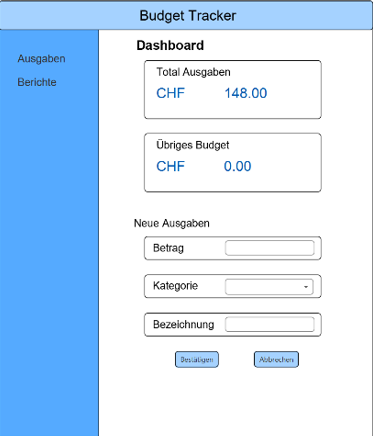

Ich habe einen funktionalen Budget-Tracker mit GUI, Navigation, Ausgaben- und Einnahmenverwaltung
sowie Benutzerlogik mit objektorientierter Java-Programmierung erstellt. Trotz Startschwierigkeiten
habe ich während des Projekts viel gelernt und meinen Java-Wissensstand aufgefrischt.
